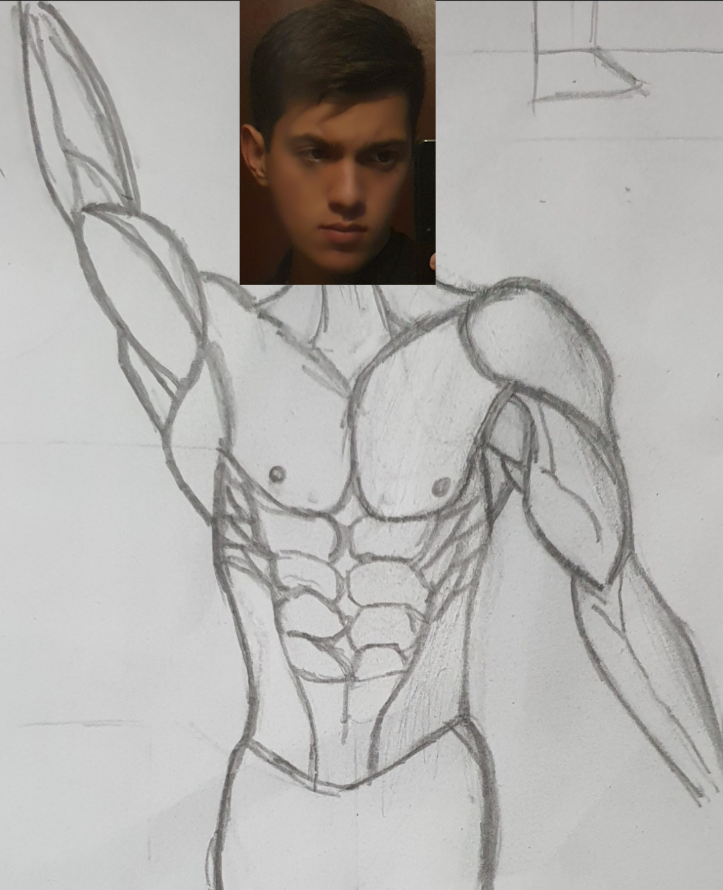

Hola esta es una pagina para presentar a Erick Malvaez Camacho
espero que les guste ;)
Esta es una foto mia:

Algo por lo que me he interesado mucho útlimamente es dibujar, sobre todo en el dibujo arquitectonico y en anatomia; de hecho el dibujo de arriba es mio
Este interes se podria decir que surgio gracias a mi primo Carlos que actualmente estudia arquitectura en CU y de vez en cuando me enseña sus dibujos
Mis peliculas favoritas:
En realidad no tienen un orden especifico, pero si tuviera que ordenar mis 5 peliculas favoritas creo que quedarian asi
Tambien quiero poner el video de Self Care por uff tremenda obra de arte audiovisual
Personajes favoritos:
Personaje
Foto
Explicacion
Narrador [ Fight Club ]
Me gusta mucho este par de Personajes por que siento que son la representacion perfecta de nuestra sociadad actual, en la cual tenemos una profunda crisis de identidad gracias a las redes sociales, estando gran parte de nuestro tiempo imaginando y creando un "yo" ficticio que es perfecto, con sonrisa grande, con cuerpo perfecto y una vida de ensueño. Ademas de que actualmente me aficione mucho a esta pelicula y a sus personajes
Tyler Durden [ Fight Club ]
ChequitoBB [ Formula 1 ]
Como tal no es un personaje pero es una gran inspiración para mi, todo el tiempo demuestra que nos podemos superar, como el dice "Never give up"